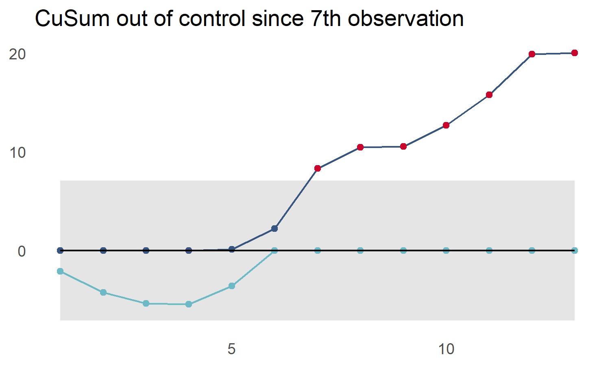
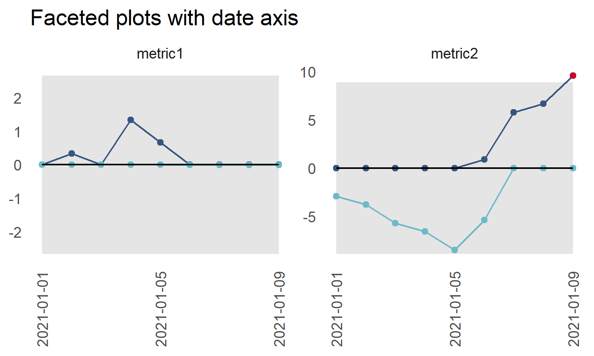

The goal of cusumcharter is to create both simple CuSum charts, with and without control limits from a vector, or to create multiple CuSum charts, with or without control limits, from a grouped dataframe, tibble or data.table
Installation
Install the development version from GitHub with:
# install.packages("remotes")
remotes::install_github("johnmackintosh/cusumcharter")A Simple CuSum calculation
This returns the CuSum statistics for a single vector, centred on a supplied target value:
library(cusumcharter)
test_vec <- c(0.175, 0.152, 0.15, 0.207, 0.136, 0.212, 0.166)
CuSum_res <- cusum_single(test_vec, target = 0.16)
CuSum_res
#> [1] 0.175 0.167 0.157 0.204 0.180 0.232 0.238Expanded outputs with cusum_single_df
This function takes a single vector as input and returns a data.frame with additional information used to calculate the CuSum statistic
test_vec2 <- c(0.175, 0.152, 0.15, 0.207, 0.136, 0.212, 0.166)
cusum_single_df(test_vec2, target = 0.16)
#> x target si cusumx cusum_target
#> 1 0.175 0.16 0.015 0.015 0.175
#> 2 0.152 0.16 -0.008 0.007 0.167
#> 3 0.150 0.16 -0.010 -0.003 0.157
#> 4 0.207 0.16 0.047 0.044 0.204
#> 5 0.136 0.16 -0.024 0.020 0.180
#> 6 0.212 0.16 0.052 0.072 0.232
#> 7 0.166 0.16 0.006 0.078 0.238Here we don’t supply a target, so one is calculated along with the other statistics
test_vec3 <- c(1,1,2,11,3,5,7,2,4,3,5)
cusum_single_df(test_vec3)
#> x target si cusumx cusum_target
#> 1 1 4 -3 -3 1
#> 2 1 4 -3 -6 -2
#> 3 2 4 -2 -8 -4
#> 4 11 4 7 -1 3
#> 5 3 4 -1 -2 2
#> 6 5 4 1 -1 3
#> 7 7 4 3 2 6
#> 8 2 4 -2 0 4
#> 9 4 4 0 0 4
#> 10 3 4 -1 -1 3
#> 11 5 4 1 0 4CuSum control limits
Two additional functions allow you to calculate control limits from a single vector and plot a CuSum chart with control limits.
test_vec3 <- c(1,1,2,3,5,7,11,7,5,7,8,9,5)
controls <- cusum_control(test_vec3, target = 4)
controls
#> x target variance std_dev cusum cplus cneg cum_nplus cum_nneg
#> 1 1 4 -3 1.77305 -3 0.0000000 -2.113475 0 1
#> 2 1 4 -3 1.77305 -6 0.0000000 -4.226950 0 2
#> 3 2 4 -2 1.77305 -8 0.0000000 -5.340426 0 3
#> 4 3 4 -1 1.77305 -9 0.0000000 -5.453901 0 4
#> 5 5 4 1 1.77305 -8 0.1134752 -3.567376 1 5
#> 6 7 4 3 1.77305 -5 2.2269504 0.000000 2 0
#> 7 11 4 7 1.77305 2 8.3404255 0.000000 3 0
#> 8 7 4 3 1.77305 5 10.4539007 0.000000 4 0
#> 9 5 4 1 1.77305 6 10.5673759 0.000000 5 0
#> 10 7 4 3 1.77305 9 12.6808511 0.000000 6 0
#> 11 8 4 4 1.77305 13 15.7943262 0.000000 7 0
#> 12 9 4 5 1.77305 18 19.9078014 0.000000 8 0
#> 13 5 4 1 1.77305 19 20.0212766 0.000000 9 0
#> ucl lcl centre obs
#> 1 7.092199 -7.092199 0 1
#> 2 7.092199 -7.092199 0 2
#> 3 7.092199 -7.092199 0 3
#> 4 7.092199 -7.092199 0 4
#> 5 7.092199 -7.092199 0 5
#> 6 7.092199 -7.092199 0 6
#> 7 7.092199 -7.092199 0 7
#> 8 7.092199 -7.092199 0 8
#> 9 7.092199 -7.092199 0 9
#> 10 7.092199 -7.092199 0 10
#> 11 7.092199 -7.092199 0 11
#> 12 7.092199 -7.092199 0 12
#> 13 7.092199 -7.092199 0 13CuSum Control Chart
test_vec3 <- c(1,1,2,3,5,7,11,7,5,7,8,9,5)
controls <- cusum_control(test_vec3, target = 4)
cusum_control_plot(controls,
xvar = obs,
title_text = "CuSum out of control since 7th observation")
Multiple CuSum Control Charts
Using base R to split and apply our dataset, and data.table’s rbindlist() to combine the results into a data.frame / data.table for plotting.
The x axis variable is the obervation number (obs) and the facet variable is .id. Both these are generated by the cusum_control function.
library(dplyr)
#>
#> Attaching package: 'dplyr'
#> The following objects are masked from 'package:stats':
#>
#> filter, lag
#> The following objects are masked from 'package:base':
#>
#> intersect, setdiff, setequal, union
library(tibble)
library(ggplot2)
library(cusumcharter)
testdata <- tibble::tibble(
N = c(1L,2L,1L,3L,1L,1L,1L,1L,1L,
1L,3L,2L,3L,2L,7L,11L,7L,9L),
metric = c("metric1","metric1","metric1","metric1","metric1",
"metric1","metric1","metric1","metric1","metric2",
"metric2","metric2","metric2","metric2","metric2",
"metric2","metric2","metric2"))
testres <- testdata %>%
dplyr::group_by(metric) %>%
dplyr::mutate(cusum_control(N)) %>%
dplyr::ungroup()
#> no target value supplied, so using the mean of x
#> no target value supplied, so using the mean of x
p <- cusum_control_plot(testres,
xvar = obs,
facet_var = metric,
title_text = "Faceted CuSum Control plots")
p
Flexible x axis
Here we add a date column, specify that the scale_type is 'date', and provide the datebreaks argument to plot our data over time
library(dplyr)
library(ggplot2)
library(cusumcharter)
testdata <- tibble::tibble(
N = c(1L,2L,1L,3L,1L,1L,1L,1L,1L,
1L,3L,2L,3L,2L,7L,11L,7L,9L),
metric = c("metric1","metric1","metric1","metric1","metric1",
"metric1","metric1","metric1","metric1","metric2",
"metric2","metric2","metric2","metric2","metric2",
"metric2","metric2","metric2"))
datecol <- as.Date(c("2021-01-01","2021-01-02", "2021-01-03", "2021-01-04" ,
"2021-01-05", "2021-01-06","2021-01-07", "2021-01-08",
"2021-01-09"))
testres <- testdata %>%
dplyr::group_by(metric) %>%
dplyr::mutate(cusum_control(N)) %>%
dplyr::ungroup() %>%
dplyr::group_by(metric) %>%
dplyr::mutate(report_date = datecol) %>%
ungroup()
#> no target value supplied, so using the mean of x
#> no target value supplied, so using the mean of x
p2 <- cusum_control_plot(testres,
xvar = report_date,
facet_var = metric,
title_text = "Faceted plots with date axis",
scale_type = "date",
datebreaks = '4 days')
p2 <- p2 + ggplot2::theme(axis.text.x = ggplot2::element_text(angle = 90,
hjust = 1,
vjust = 0.5))
p2
library(dplyr)
library(ggplot2)
library(cusumcharter)
testdata <- tibble::tibble(
N = c(-15L,2L,-11L,3L,1L,1L,-11L,1L,1L,
2L,1L,1L,1L,10L,7L,9L,11L,9L),
metric = c("metric1","metric1","metric1","metric1","metric1",
"metric1","metric1","metric1","metric1","metric2",
"metric2","metric2","metric2","metric2","metric2",
"metric2","metric2","metric2"))
datecol <- as.Date(c("2021-01-01","2021-01-02", "2021-01-03", "2021-01-04" ,
"2021-01-05", "2021-01-06","2021-01-07", "2021-01-08",
"2021-01-09"))
testres <- testdata %>%
dplyr::group_by(metric) %>%
dplyr::mutate(cusum_control(N)) %>%
dplyr::ungroup() %>%
dplyr::group_by(metric) %>%
dplyr::mutate(report_date = datecol) %>%
ungroup()
#> no target value supplied, so using the mean of x
#> no target value supplied, so using the mean of x
p5 <- cusum_control_plot(testres,
xvar = report_date,
show_below = TRUE,
facet_var = metric,
title_text = "Highlights above and below control limits")
p5